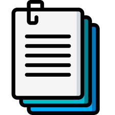

Línea del tiempo de las aplicaciones web
INTRODUCCIÓN
La evolución de la web y la computación ha sido un proceso continuo de
innovación y transformación, que ha impactado profundamente en nuestra
sociedad, economía y vida cotidiana. Desde sus orígenes en la informática militar
hasta la llegada de la inteligencia artificial y la realidad aumentada, la web ha
experimentado avances significativos que han redefinido la manera en que
interactuamos con la información y la tecnología.
A mediados del siglo XX, las computadoras eran utilizadas principalmente con
fines científicos y militares. Posteriormente, con la llegada del ordenador personal,
el acceso a la computación se democratizó, permitiendo a individuos y empresas
aprovechar su potencial. Con el tiempo, Internet y la web revolucionaron la
manera en que accedemos al conocimiento, creamos contenido y nos
comunicamos.
Desde la Web 1.0, caracterizada por su estática y unilateralidad, hasta la Web
5.0, que promete interacciones más humanas y personalizadas, cada etapa ha
traído consigo nuevas posibilidades y desafíos. En esta línea de tiempo,
exploraremos los hitos clave de la evolución de la web y la computación, desde
sus inicios hasta su futuro cercano, destacando las tecnologías y eventos que han
marcado cada era.

Descargar línea del tiempo